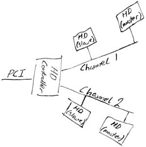
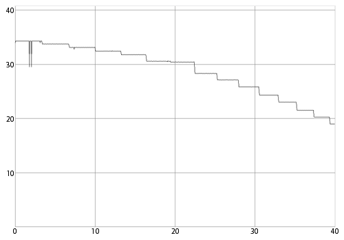
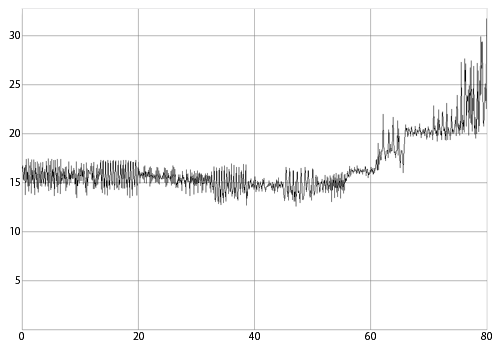
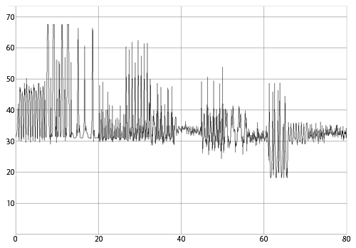
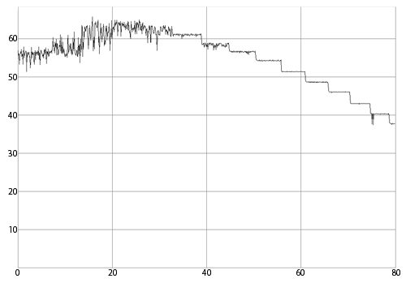
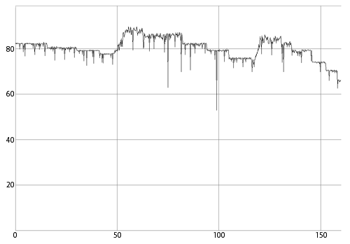

Investigating RAID performance¶
If you have two or four identical drives in a RAID stripe set and the performance is only a fraction of what you would expect, these notes may be of interest.
Note: This page is relevant for inexpensive, firmware based RAID controllers or software RAID with plain IDE controllers. The reason is that these solutions use naive RAID algorithms and do very little caching (since they share the system RAM). Professional RAID controllers don’t have the same limitations as they have significant onboard caches that are utilized by intelligent algorithms.
A while ago, I decided to set up a RAID stripe set using 4 identical drives and one of the recent, inexpensive firmware based RAID controller cards, a Promise FastTrak100. I had already measured the transfer rate on the individual drives to a maximum transfer rate of 35MB/s each. So I figured that the new setup would give me a RAID drive with a max transfer rate close to 140MB/s (4 x 35MB/s).
As it turned out, I got a transfer rate that was actually slightly lower than that of a single drive, at barely 30MB/s. I did a search online and I found that many people were having trouble with RAID performance but the advice that was given was usually limited to one or more of the following:
- Use one drive per channel (master-master) instead of two drives on one channel (master-slave).
- Configure all drives to cable select (CS) or master (MA).
- Use 80 pin cables.
- Connect the drives to the outermost connectors.
- Make sure DMA is enabled for all drives both in the BIOS and in the OS.
These advice are all beneficial but my setup already followed that advice.
After measuring the transfer rates of different configurations, I realized that what what was happening was a combination of limitations in the IDE controller and mechanical limitations in the way hard drives work.
Consider the basic layout of an IDE controller:

One IDE controller has one PCI interface and two channels. Each channel supports two drives, giving a max of 4 drives per controller. So two drives share a channel and two channels share the PCI interface.
The problem with my controller was that the PCI interface was not able to handle the two channels running at full transfer rate, and one channel was not able to handle two drives running at full transfer rate. In other words, the bandwidth on a single channel is lower than two times the bandwidth of one drive and the bandwidth on the PCI bus is lower than two times the bandwidth of one channel.
So, trying to read from two drives on the same channel would cause the transfer rate to be limited by the channel bandwidth. Trying to read from four drives at the same time would further limit the rate because of the PCI bandwidth limitation.
Now, if those were the only limitations, things would still be ok because, with four drives, you would get a transfer rate equivalent to the bandwidth on the PCI interface, which is still pretty good. However, the controller limitations interact with mechanical limitations of the drives to create a much worse situation.
Consider how a hard drive works (simplified): The platter rotates at a constant speed. The data is arranged in tracks. To read one track, the head must be standing still above the track while the platter makes one full rotation. So when the entire track is read, the head is positioned on the beginning of the track again. Say you want to read two tracks. You position the head on the first track, wait until the start of the track comes by, start reading and read until the end (which is also the start) of the track appears. If the second track started at the exact same point as the first track, you would miss the start of the second track because it would pass by while the head was moving from the first to the second track. You would then have to wait for the platter to make almost one full rotation before you could start reading the second track. To fix this problem, tracks are offset so that each track starts a little after the previous one. So when reading two tracks, the head can move to the second track before the beginning of that track comes around. The offsets are tuned so that the offset matches the time it takes for the head to move between tracks plus some safety margin.
So, a hard drive can only supply data at a given speed since the platters rotate at a given speed. If you are not able to read data from the drive as fast as it’s being retrieved from the platter, there is no gentle degradation of performance. Instead, if you can’t keep up with the full speed, transfer rate is instantly halved as you’re only able to read from the platter on every other rotation. If you can’t keep up with that either, speed is reduced to 1/3rd and so on. When you’re not reading, you’re waiting for the beginning of the track you missed the first time to come around again.
Combined, these two limitations, the one of the controller and the one of the hard drives, cause performance to suffer greatly. Instead of smoothly streaming data at the full rate from all the drives, you end up constantly falling behind and you have to wait for the platter to rotate a full turn before you can continue reading. Since the drives don’t run synchronously, you end up with a chaotic situation. When you’re ready to read a chunk of data from one drive, it’s random what the position of the platter is on that drive.
How to fix the problem?¶
Ironically, the problem gets worse the faster your hard drives are, compared to how fast your controller is. So you might actually get better results using slower drives.
The way that I alleviated the problem was to install an additional controller. That takes away the single channel limitation since no drives have to share channels. The PCI interface limitation is still there though, and I’d have to install 4 controllers to remove that limitation.
It would be really nice if it was possible to low level format the drives. Then, you could increase the track skew to fit the speed you’re able to read at. Unfortunately, modern drives can not be low level formatted.
Tips¶
- If you want to install more than one controller, choose different types of controllers. The drivers I had got confused when there was more than one controller of one type installed.
- When you install multiple different controllers, you can no longer use the firmware RAID support on the controllers. You’ll have to set up software RAID. Which again means that you may not be able to boot from your RAID.
- If you want to make do with a single controller, try to set up your array using spanning instead of striping. When you use spanning, only one drive is active at a time so none of the limitations in the controller apply. You might end up getting much better performance and it’s easy to add drives to your array later.
- If you are concerned about performance, you will probably not be able to use RAID level 5 (Striping and Parity) because it is very slow to write to (each write requires a number of read and write operations). If you need RAID level 5, consider a professional card. A good professional card can hide the significant overhead of RAID level 5 by using extensive caching.
Benchmarks¶
It is worth mentioning that because the performance of RAID arrays is extremely sensitive to these timing issues, the real world performance you will see is likely to be very different from your benchmarks (even more so than with most other types of benchmarks).
Background material¶
To find the data used above, I used a program that measures the maximum transfer rate of the hard drive as a function of the head actuator position.
The plateaus you see are parts of the drive where the amount of data is the same per sector. The sharp drops in read speed happen if the hard drive has to re-read data because of CRC errors or must wait for the computer to retrieve the data.
Single drive¶

Measuring a single drive, you’ll see a single nice line tapering off towards the right, starting at the maximum transfer rate of your hard drive and decreasing as the actuator moves towards the center of the platter, where there’s less data per track so reading slows down.
Notice that there are few variations in read speed.
Two drives on one channel (master-slave)¶

Measuring the speed of a stripe set of two drives sharing the same channel. Instead of starting at the expected 70MB/s (2
x
35MB/s), the transfer rate starts at 15MB/s. Not only that, it also varies seemingly chaotically and increases towards the end where you would expect it to decrease since the individual drives become slower.
Two drives on one controller (master-master)¶

Moving the two drives to separate channels on the same controller doubles the transfer rate.
Two drives on two controllers¶

At the start of the measurement, the random variations in transfer rate and the fact that the average rate increases while the individual drives become slower indicate that a limit is being hit. This is probably an OS or driver limitation. At around 61MB/s combined, the line becomes smooth, indicating that the limitation applies to rates above that. Below that rate, the limit is no longer present and both hard drives are working at their maximum transfer rates.
Four drives on two controllers¶

With four drives on two controllers, the limit that was hit with two drives disappears and the PCI interface transfer rate limit is hit instead.
More information¶
Read more about head skew and mechanical hard drive design in general.
.. |psf| replace:: Python Software Foundation